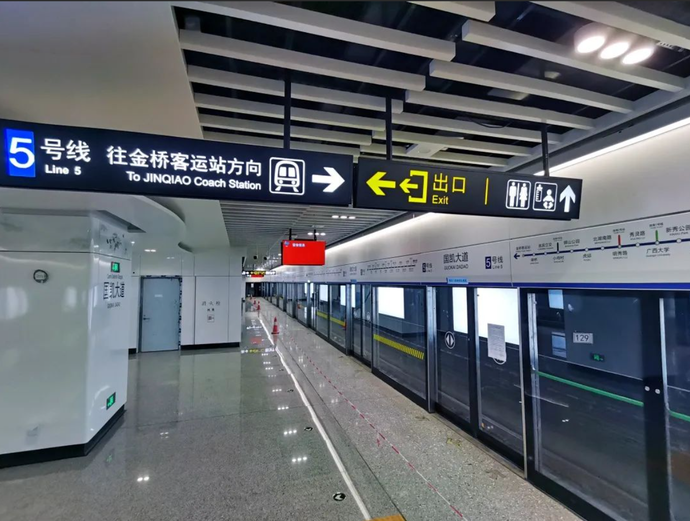
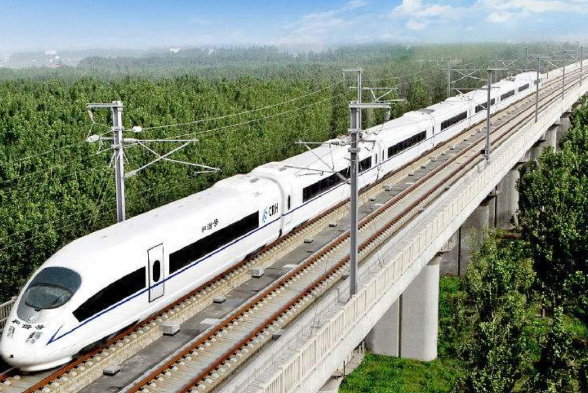

| 交通发展 | ||
| 南宁地铁 |  | 南宁地铁发展史是一部充满奋斗和创新的历史。自2016年6月28日，南宁地铁1号线东段通车试运营开始，南宁成为全国五个少数民族自治区中首个开通地铁的城市。随后，地铁2号线、3号线、4号线和5号线相继开通，实现了南宁地铁从单线到网络化运营的历史性跨越。每一次地铁线路的开通，都标志着南宁城市交通的发展和人们出行方式的改变。如今，南宁地铁已经成为城市公共交通的重要组成部分，为市民提供安全、便捷、舒适的出行方式，助力城市的繁荣和发展。 |
| 吴圩机场 | 吴圩机场是位于中国广西壮族自治区南宁市的一个主要民用机场，也是广西最大的机场。它位于南宁市西南方向的吴圩镇，距离市区约28公里。吴圩机场是广西地区重要的交通枢纽，也是中国通往东盟地区的重要航空枢纽之一。 | |
| 广西高铁 |  | 广西高铁发展历经了多个阶段，目前已经形成了较为完善的高铁网络。广西高铁不仅连接了南宁、桂林、柳州等城市，还连接了多个沿边城市。广西高铁的开通，不仅缩短了城市间的时空距离，方便了人们的出行，也促进了沿线地区的经济发展，同时也为中国高铁技术的进步和国际化发展做出了贡献。 |